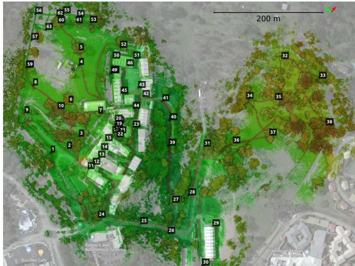
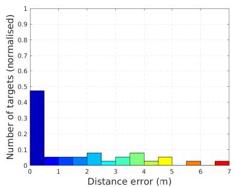

原图注（Fig. 2）：Wildcat consists of two major modules: Wildcat odometry in which IMU and lidar measurements are integrated in a sliding window fashion to continuously estimate the robot trajectory and produce submaps for pose-graph optimisation; Pose-graph optimisation where submaps are used to generate odometry edges as well as loop closures to efficiently map large-scale environments while correcting the accumulated drift.（Wildcat 由两个主要模块组成：Wildcat 里程计，以滑动窗口的方式融合 IMU 与激光测量，连续地估计机器人轨迹并产出用于位姿图优化的子图；位姿图优化，用子图生成里程计边以及回环，从而高效地测绘大规模环境并纠正累积漂移。） 怎么看这张图：① 把图分成左右两半：左边是里程计（odometry）、右边是位姿图优化（PGO），这就是全篇的骨干；② 盯住它们之间那条连接的箭头——传过去的东西是 submap（子图），而不是原始点云；③ 再看右边的两类边：odometry edges（里程计边）把相邻子图连起来，loop closure（回环）把不挨着的子图连起来，这正是第二季讲过的位姿图结构；④ 注意左边那一行「sliding window」：这是「在线」的实现方式，也是它必须付出代价的地方。 要记住的一句话：整篇文章可以用一句话概括：用连续时间把里程计做稳，再用位姿图把漂移拉回来。
原图注（Fig. 1）：Top: Wildcat can map large-scale environments, including various types of structured and unstructured areas indoors and outdoors. Bottom: Two close-up views from the challenging areas where the state-of-the-art systems struggle to converge (see Sec. VI-D).（上：Wildcat 能够测绘大规模环境，包括室内外各种结构化与非结构化区域。下：两张来自困难区域的特写，在那里当时最先进的系统难以收敛。） 怎么看这张图：① 上半部分是一张拼起来的地图，你能看出它同时包含规整的室内空间（有直线墙、有走廊）和不规整的室外场地；② 下半部分那两张特写是要点：那是当时最先进的方法都会「跑不下去」的地方，正文后面点名说是隧道；③ 把这张图和后面的动态联系起来记：场地越大、越狭长、越缺少可用于定位的几何特征，位姿估计就越容易在某个方向失去约束；④ 这张图也在暗示一件事：这类场景往往拿不到轨迹真值，因为室内外连成一片、没法在整条轨迹上布置外部定位系统。 要记住的一句话：这篇论文要对付的不是「理想实验室环境」，而是连最先进方法都跑不完的大尺度室内外混合场景。
原图注（Fig. 3）：Continuous-Time optimisation framework in Wildcat. Local Optimisation is based on multiple cost terms mainly from IMU measurements and surfel correspondences. Local optimisation estimates a set of discrete poses (Update Sample Poses), then in B-spline Interpolations, by fitting a cubic B-spline over the corrected samples and the robot poses obtained from the IMU poses at the sample times, the robot poses (Update IMU Poses) are updated at a high temporal resolution. This process is repeated iteratively to obtain an accurate estimate of robot trajectory and remove distortion from the surfel map.（Wildcat 的连续时间优化框架。局部优化基于多个代价项，主要来自 IMU 测量与面元对应关系。局部优化先估出一组离散位姿（更新采样位姿），接着在 B 样条插值这一步，用一条三次 B 样条去拟合修正后的采样位姿、以及在采样时刻由 IMU 位姿得到的机器人位姿，从而以很高的时间分辨率更新机器人位姿（更新 IMU 位姿）。这个过程反复迭代，以得到准确的机器人轨迹估计，并消除面元地图里的畸变。） 怎么看这张图：① 按箭头走一遍环路：Local Optimisation（局部优化）→ Update Sample Poses（更新采样位姿）→ B-spline Interpolations（B 样条插值）→ Update IMU Poses（更新 IMU 位姿）→ 回到局部优化；② 盯住两处措辞：优化出来的是离散的采样位姿，但插值之后得到的是高时间分辨率的位姿——「离散优化、连续输出」就是这张图要表达的；③ 注意环路最后那句「remove distortion from the surfel map」：去畸变是写在这个循环的输出里的，也就是说它不是一个单独的预处理步骤，而是和优化交织在一起的；④ 图的左边那些代价项来自 IMU 与面元对应，第 5 节会展开。 要记住的一句话：Wildcat 的做法是「用少量的离散位姿做优化，用一条连续曲线把结果铺满整段时间」——优化保持轻量，轨迹保持连续。
4. B 样条的三点直觉
说了半天「曲线」，它到底是什么曲线？答案是三次 B 样条。这一节只讲三点直觉，不讲数学。
★★ 先说清楚哪些是原文给的、哪些是补的
原文给的：它明确说了用 cubic B-spline（三次 B 样条）——相关词出现在 Related Work、Fig. 3 的图注、以及优化流程的第二步里。
原文没有给的：正文没有给出任何 B 样条公式，也从未出现「控制点」「节点」「阶数」这几个术语。下面这张图和这三句直觉里的术语级解释（次数、阶数、局部支撑），是标准教材里的说法，是我们补的，不能当作原文引用。「采样位姿充当控制点」这一层意思可以从原文流程推出（它把若干个等距采样时刻的位姿当作待优化的变量），但那个词是补的。
原图注（Fig. 4）：A schematic of Wildcat data fusion procedure. The sample poses, whose timestamps (ti) fall between IMU timestamps, are initialised with linear interpolation between two closest IMU poses. Similarly, surfels, (e.g., s), are initialised based on linear interpolation between IMU poses.（Wildcat 数据融合流程的示意图。那些时间戳落在 IMU 时间戳之间的采样位姿，用最近的两个 IMU 位姿做线性插值初始化；面元（例如 s）同理，也基于 IMU 位姿之间的线性插值来初始化。） 怎么看这张图：① 这张图要解决的是一个很实际的问题：采样位姿的时间戳落在 IMU 时间戳之间，怎么给它一个起点？答案是用最近的两个 IMU 位姿线性插值；② 注意「初始化」这个词——插值只是给初值，真正的位姿由后面的优化决定；③ 面元的初始化用的是同一套插值逻辑，说明在这个系统里「位姿的时间插值」是一个到处都要用的基础操作；④ 回到上一张自绘图的时间轴看：那些大方块就是这里的 sample poses，密排的小圆点就是 IMU poses，两者的时间戳天然错开。 要记住的一句话：连续时间不只是「表示更漂亮」，它顺手解决了两种传感器时间戳不对齐这个每天都在发生的工程问题。
这两个参数里藏着这一节的核心困难：它同时包含室内与室外。原文写得很直接——因为要穿越室内和室外，在这样一个复杂多样的环境里，提供精确的位姿真值是不可行的（原文原话：providing an accurate pose ground truth is not feasible）。注意这句话的分量：不是「没测」，是「测不了」。你没法在一个 5 公里、室内外连成一片的场地上，布一套能覆盖整条轨迹的外部定位系统。
原图注（Fig. 5）：Photos from the QCAT (SpinningPack) dataset indoors and outdoors. The QCAT dataset includes various types of environments. The confined areas such as through the tunnel or stair cases challenge SLAM due to the degeneracy of these areas. In some of the photos, surveyed targets can be seen.（QCAT（SpinningPack）数据集室内外的照片。QCAT 数据集包含多种环境类型。隧道或楼梯这类受限区域，会因为几何退化而给 SLAM 带来困难。在部分照片里可以看到测绘靶标。） 怎么看这张图：① 这是一组实拍照片，把「纸面上的 QCAT」变成了你能看见的场地：室内房间、楼梯间、狭长通道、室外开阔地；② 原文在图注里点出关键：隧道与楼梯这类受限区域会造成「几何退化」——意思是这些地方的几何形状太单薄，约束不住某些方向的运动；③ 找找照片里的测绘靶标：那是那些黑白相间的小板子，它们就是第 6 节那张示意图里黄色小圆点的实物；④ 记住这张图给你的观感：这不是一个干净的数据集，是一个真实、杂乱、混合的场地。 要记住的一句话：真值不是凭空来的——它是有人扛着全站仪，在这 63 个点上一个个测出来的。

原图注（Fig. 12）：A bird's-eye view of the QCAT map, generated from the FlatPack dataset along with the trajectory estimated by Wildcat, overlaid with the location of surveyed targets deployed across the site.（QCAT 地图的鸟瞰图，由 FlatPack 数据集生成，同时叠加了 Wildcat 估计的轨迹，以及场地内已测绘靶标的位置。） 怎么看这张图：① 这张图里有三样东西：地图本身（点云的样子）、Wildcat 估出的轨迹、以及 63 个靶标的位置；② 认出规模感：这是一张 5 公里级场地的鸟瞰图，地图从室内一直铺到室外，中间穿过狭长区域；③ 对照上一张示意图看：示意图里的三块区域（室内、隧道、室外）在这里是连成一体的——这正是「提供精确位姿真值不可行」的原因；④ 注意靶标是散布在整条路径上的，不是集中在某一小段，所以它们的平均误差反映的是全场的整体一致性。 要记住的一句话：这张图把 0.42 m 这个数字的「适用范围」画得很清楚：它覆盖的是这一整片混合场地，而不是某个局部。
这里还藏着一个更需要小心的坑：它也不是 DARPA 那个 3 cm。Wildcat 在地下挑战赛上的确报过一个「点对点平均 3 cm」的数字，但那是完全不同的口径——40 cm 分辨率的体素地图对 1 cm 分辨率的真值做最近邻统计。作者自己在正文里就说这个做法因为最近邻数据关联，并不能精确反映地图精度，所以他们后来改用「射线交汇三角化靶标中心」的办法来量 QCAT。换句话说：3 cm 和 0.42 m 是两个不能放在一起比的数——一个是稀疏体素地图对稠密真值的最近邻统计，一个是靶标点对点距离。
所以那句要在这一课写死的话是：Wild-Places 拿它当亚米级真值去评「检索落在 3 m 内」，完全成立——够用比准更重要。这也正是第九季 0185 那把「尺子」的用法：不是要找最准的尺子，而是要找比你要判的事高一个量级的那把尺子。

原图注（Fig. 13）：Error histogram, corresponding to the error statistics reported in Table II, over the QCAT FlatPack dataset (top row) versus QCAT SpinningPack dataset (bottom row) for Wildcat (left), LIO-SAM (middle) and FAST-LIO2 (right). Number of targets being selected in each method is normalised for better comparison. Note that the results of LIO-SAM and FAST-LIO2 only include a subset of targets before these methods failed.（误差直方图，与 Table II 报告的误差统计一一对应：上排是 QCAT FlatPack、下排是 QCAT SpinningPack；左列 Wildcat、中列 LIO-SAM、右列 FAST-LIO2。为了便于比较，各方法选中的靶标数做了归一化。注意 LIO-SAM 与 FAST-LIO2 的结果只包含它们在失效之前的那部分靶标。） 怎么看这张图：① 这是一个 3 列 × 2 行的直方图阵列：列＝方法，行＝数据集；② 看每一格的横轴右端——误差尾巴拖得越远，说明有越多的靶标偏得离谱；③ 原文结论是：Wildcat 在「误差小于 0.5 m 的点的占比」以及「最大误差」两项上都优于另外两个系统，在两个数据集上都成立；④ 但务必记住图注最后那句：另外两个系统的统计只覆盖了一部分靶标（因为它们在隧道里失效了），所以这张图的横向比较也要打折扣。 要记住的一句话：直方图比一个平均值诚实得多——平均值只告诉你「典型情况有多好」，直方图会告诉你「最差能差到哪里」。